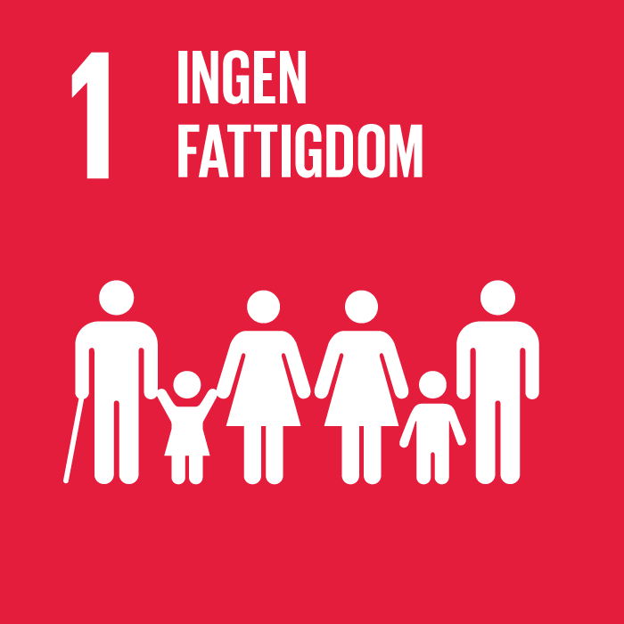
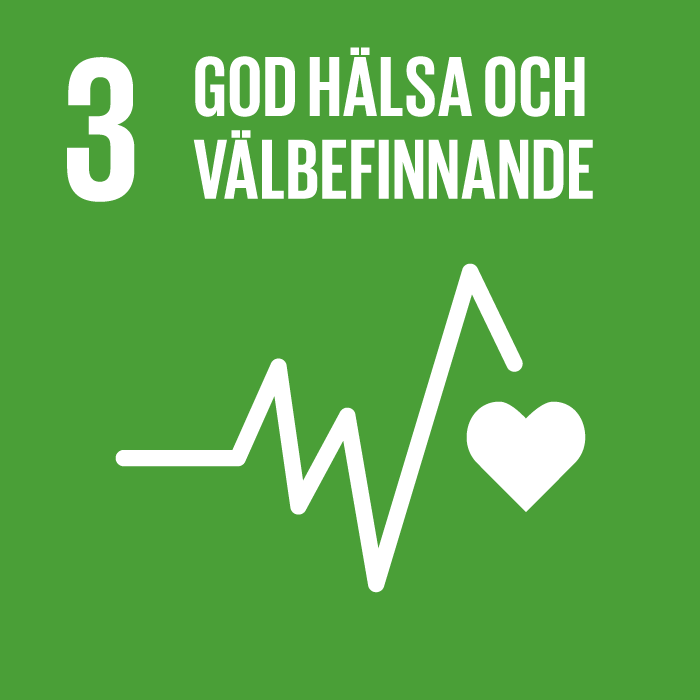

1. Ingen Fattigdom
Fattigdom omfattar fler dimensioner än den ekonomiska. Fattigdom innebär även brist på frihet, inflytande, hälsa, utbildning och säkerhet. Det brukar kallas för multidimensionell fattigdom. Idag lever 1,3 miljarder människor i multidimensionell fattigdom och av dessa är hälften under 18 år. Brist på mat, sjukvård, säkerhet och rent vatten dödar tusentals människor varje dag, men det blir bättre och sedan 1990 har den extrema fattigdomen halverats. Mål 1 handlar om att avskaffa fattigdom i alla dess former och ge alla människor i världen chans till ett värdigt och tryggt liv.
2. Ingen Hunger
Hunger är en av de främsta dödsorsakerna i världen och idag lever ungefär 821 miljoner människor i världen i hunger. Brist på mat är en mänsklig katastrof som har långsiktiga effekter för människors hälsa och samhällens möjlighet till utveckling och tillväxt. Vår planet har försett oss med enorma resurser, men ojämlik tillgång och ineffektiv hantering lämnar miljontals människor undernärda. Tillgång till tillräcklig och näringsriktig mat är en mänsklig rättighet som varje stat har en skyldighet att tillförsäkra sina medborgare. Genom att främja ett hållbart jordbruk med modern teknik och rättvisa distributionssystem kan vi säkerställa tillgång till tillräcklig och näringsriktig mat för alla.

3. God Hälsa och Välbefinnande
God hälsa är en grundläggande förutsättning för människors möjlighet att nå sin fulla potential och att bidra till samhällets utveckling. Människors hälsa påverkas av ekonomiska, ekologiska och sociala faktorer och mål 3 inkluderar alla dimensioner och människor i alla åldrar.Under de senaste decennierna har stora framsteg gjorts för att förbättra människors hälsa globalt, till exempel så har barndödligheten minskat med 50% sedan 1990. Investeringar i hälsa genom förebyggande insatser och modern och effektiv vård för alla gynnar samhällets utveckling i stort och skapar förutsättningar för människors grundläggande rättigheter till välbefinnande.
14. Hav och Marina Resurser
Världens hav – deras temperatur, kemi, strömmar och liv – driver globala system som gör jorden beboelig för mänskligheten. Haven täcker 70 procent av vår planet och över tre miljarder människor är beroende av den marina och kustnära biologiska mångfalden för sin försörjning. Hur vi hanterar våra hav är avgörande för mänskligheten som helhet och för att balansera effekterna av klimatförändringarna. Överfiske, försurning, gifter och föroreningar är några av de problem som drabbar våra hav idag. Visste du till exempel att åtta miljoner ton plast hamnar i haven varje år? Fortsätter det i denna takt kommer haven att bestå av mer plast än fisk år 2050. Vi måste skydda våra hav och säkerställa hållbar användning av havsbaserade resurser och ekosystem. Vi har alltid behövt haven. Nu behöver haven oss.